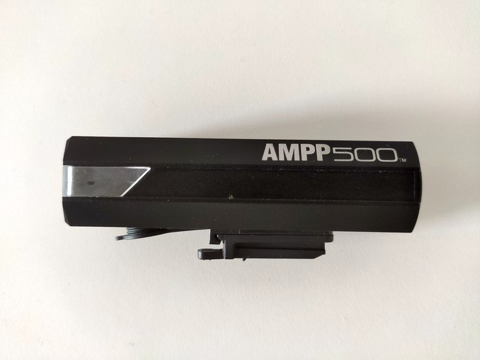
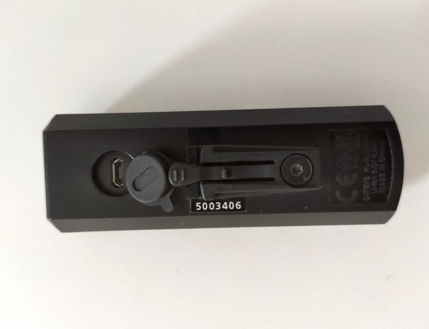
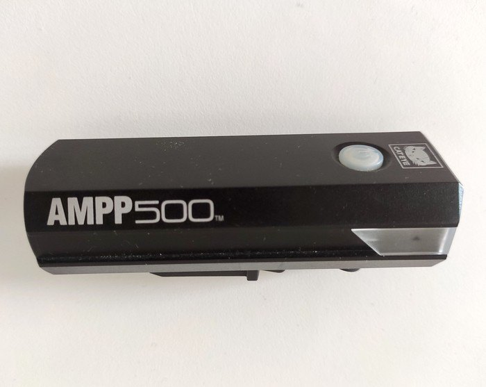

Всё о велосипедах
Серия переднего света CatEye AMPP содержит модели яркостью от 100 до 1000 люменов. Особенность конструкции всех этих фонариков — сбоку линза заходит на несколько сантиметров вглубь корпуса, что дает хорошую боковую видимость. Будет полезно на перекрестках.
Используется универсальное крепление на руль от Cateye — FlexTight. Подходит для любого переднего света от данного производителя. Можно ездить с запасным фонариком и менять прямо во время езды, если первый разрядился. Закрепляется хомутом, подойдет для рулей любых диаметров. Можно регулировать наклон прямо во время езды, например опускать, чтобы не слепить встречный транспорт, или поднимать для большой дальности видимости.
Заявлена мощность 400 люменов. Имеются следующие 4 режима работы.
Яркий свет (400 люменов) — я пользуюсь редко, имеет смысл в сложных условиях освещения, например когда сбоку слабо светят фонари, а саму дорогу не видно, тут выручает яркость.
Средний свет (200 люменов) — наиболее часто используемый режим. Дальность почти такая же, как у первого, а батареи хватает в два раза больше. Сила света, конечно, заметно меньше, но ее вполне достаточно при езде по неосвещенным дорогам.
Daytime HyperConstant — странный режим, все время фонарь слабо светит и при этом ярко мигает. Из-за вспышек зрение не может адаптироваться, и ехать неприятно.
Мигание (Стробоскоп) — самый экономный режим. Естественно, в полной темноте с таким ездить не получится, зато привлекает внимание спереди. Имеет смысл использовать только на хорошо освещенных улицах или в сумерках.
Зарядка через micro USB (ждем выхода модели с USB-C), кабель есть в комплекте. Разъем закрывается резиновой несъемной вставкой, и это удобно: не потеряется. Полная зарядка у меня занимает часа 4. Когда заряда остается менее 25 %, кнопка питания начинает подсвечиваться красным.
Корпус полностью выполнен из пластика, и это недостаток, особенно если вы живете в жаркой местности. Я использовал фонарик летом во время ночных поездок в ОАЭ. Это можно назвать одним из самых экстремальных мест планеты в плане температуры: в летнее время даже ночью температура не опускается ниже 30 градусов. Плюс к этому добавляется тепло от светодиодов, и в итоге корпус раскаляется, ведь охлаждения при таких погодных условиях не происходит. Пластик CatEye AMPP400 не выдержал, и через несколько выездов в районе линзы пошла трещина. В защиту Cateye скажу, что трещина не повлияла на работоспособность, и я продолжаю ездить с фонариком уже год. Так что если планируются поездки в жарких местах, рекомендую брать модели с металлическим корпусом. Для умеренных широт, уверен, прочности данного фонарика хватит с запасом.
| Плюсы | Минусы |
|---|---|
|
|